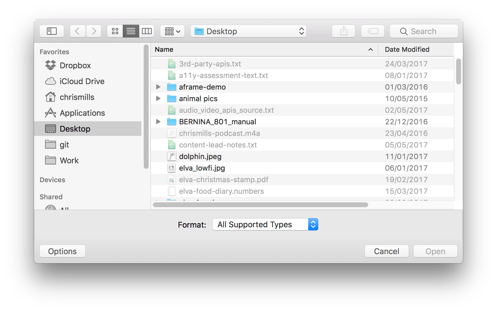

{{HTMLElement("input")}} elements with type="file" let the user choose one or more files from their device storage. Once chosen, the files can be uploaded to a server using form submission, or manipulated using JavaScript code and the File API.
| {{anch("Value")}} | A {{domxref("DOMString")}} representing the path to the selected file. |
| Events | {{domxref("HTMLElement/change_event", "change")}} and {{domxref("HTMLElement/input_event", "input")}} |
| Supported common attributes | {{htmlattrxref("required", "input")}} |
| Additional Attributes | {{htmlattrxref("accept", "input/file")}}, {{htmlattrxref("capture", "input/file")}}, {{htmlattrxref("files", "input/file")}}, {{htmlattrxref("multiple", "input/file")}} |
| IDL attributes | files and value |
| DOM interface |
{{domxref("HTMLInputElement")}} |
| Properties | |
| Methods | {{domxref("HTMLInputElement.select", "select()")}} |
A file input's {{htmlattrxref("value", "input")}} attribute contains a {{domxref("DOMString")}} that represents the path to the selected file(s). If the user selected multiple files, the value represents the first file in the list of files they selected. The other files can be identified using the input's HTMLInputElement.files property.
files property."" (empty).C:\fakepath\, to prevent malicious software from guessing the user's file structure.In addition to the common attributes shared by all {{HTMLElement("input")}} elements, inputs of type file also support the following attributes:
| Attribute | Description |
|---|---|
{{anch("accept")}} |
One or more {{anch("Unique file type specifiers", "unique file type specifiers")}} describing file types to allow |
{{anch("capture")}} |
What source to use for capturing image or video data |
{{anch("files")}} |
A {{domxref("FileList")}} listing the chosen files |
{{anch("multiple")}} |
A Boolean which, if present, indicates that the user may choose more than one file |
acceptThe accept attribute value is a string that defines the file types the file input should accept. This string is a comma-separated list of {{anch("Unique file type specifiers", "unique file type specifiers")}}. Because a given file type may be identified in more than one manner, it's useful to provide a thorough set of type specifiers when you need files of a given format.
For instance, there are a number of ways Microsoft Word files can be identified, so a site that accepts Word files might use an <input> like this:
<input type="file" id="docpicker" accept=".doc,.docx,application/msword,application/vnd.openxmlformats-officedocument.wordprocessingml.document">
captureThe capture attribute value is a string that specifies which camera to use for capture of image or video data, if the accept attribute indicates that the input should be of one of those types. A value of user indicates that the user-facing camera and/or microphone should be used. A value of environment specifies that the outward-facing camera and/or microphone should be used. If this attribute is missing, the {{Glossary("user agent")}} is free to decide on its own what to do. If the requested facing mode isn't available, the user agent may fall back to its preferred default mode.
capture was previously a Boolean attribute which, if present, requested that the device's media capture device(s) such as camera or microphone be used instead of requesting a file input.filesA {{domxref("FileList")}} object that lists every selected file. This list has no more than one member unless the {{htmlattrxref("multiple", "input/file")}} attribute is specified.
multipleWhen the multiple Boolean attribute is specified, the file input allows the user to select more than one file.
In addition to the attributes listed above, the following non-standard attributes are available on some browsers. You should try to avoid using them when possible, since doing so will limit the ability of your code to function in browsers that don't implement them.
| Attribute | Description |
|---|---|
{{anch("webkitdirectory")}} |
A Boolean indicating whether or not to only allow the user to choose a directory (or directories, if {{anch("multiple")}} is also present) |
webkitdirectory {{non-standard_inline}}The Boolean webkitdirectory attribute, if present, indicates that only directories should be available to be selected by the user in the file picker interface. See {{domxref("HTMLInputElement.webkitdirectory")}} for additional details and examples.
Note: Though originally implemented only for WebKit-based browsers, webkitdirectory is also usable in Microsoft Edge as well as Firefox 50 and later. However, even though it has relatively broad support, it is still not standard and should not be used unless you have no alternative.
A unique file type specifier is a string that describes a type of file that may be selected by the user in an {{HTMLElement("input")}} element of type file. Each unique file type specifier may take one of the following forms:
.jpg, .pdf, or .doc.audio/* meaning "any audio file".video/* meaning "any video file".image/* meaning "any image file".The accept attribute takes as its value a string containing one or more of these unique file type specifiers, separated by commas. For example, a file picker that needs content that can be presented as an image, including both standard image formats and PDF files, might look like this:
<input type="file" accept="image/*,.pdf">
<form method="post" enctype="multipart/form-data"> <div> <label for="file">Choose file to upload</label> <input type="file" id="file" name="file" multiple> </div> <div> <button>Submit</button> </div> </form>
div {
margin-bottom: 10px;
}
This produces the following output:
{{EmbedLiveSample('A_basic_example', 650, 90)}}
Note: You can find this example on GitHub too — see the source code, and also see it running live.
Regardless of the user's device or operating system, the file input provides a button that opens up a file picker dialog that allows the user to choose a file.
Including the {{htmlattrxref("multiple", "input/file")}} attribute, as shown above, specifies that multiple files can be chosen at once. The user can choose multiple files from the file picker in any way that their chosen platform allows (e.g. by holding down Shift or Control, and then clicking). If you only want the user to choose a single file per <input>, omit the multiple attribute.
The selected files' are returned by the element's HTMLInputElement.files property, which is a {{domxref("FileList")}} object containing a list of {{domxref("File")}} objects. The FileList behaves like an array, so you can check its length property to get the number of selected files.
Each File object contains the following information:
namelastModifiedlastModifiedDate {{deprecated_inline}}lastModified instead.sizetypewebkitRelativePath {{non-standard_inline}}file picker in which the {{htmlattrxref("webkitdirectory", "input/file")}} attribute is set). This is non-standard and should be used with caution.Note: You can set as well as get the value of HTMLInputElement.files in all modern browsers; this was most recently added to Firefox, in version 57 (see {{bug(1384030)}}).
Often you won't want the user to be able to pick any arbitrary type of file; instead, you often want them to select files of a specific type or types. For example, if your file input lets users upload a profile picture, you probably want them to select web-compatible image formats, such as {{Glossary("JPEG")}} or {{Glossary("PNG")}}.
Acceptable file types can be specified with the {{htmlattrxref("accept","input/file")}} attribute, which takes a comma-separated list of allowed file extensions or MIME types. Some examples:
accept="image/png" or accept=".png" — Accepts PNG files.accept="image/png, image/jpeg" or accept=".png, .jpg, .jpeg" — Accept PNG or JPEG files.accept="image/*" — Accept any file with an image/* MIME type. (Many mobile devices also let the user take a picture with the camera when this is used.)accept=".doc,.docx,.xml,application/msword,application/vnd.openxmlformats-officedocument.wordprocessingml.document" — accept anything that smells like an MS Word document.Let's look at a more complete example:
<form method="post" enctype="multipart/form-data">
<div>
<label for="profile_pic">Choose file to upload</label>
<input type="file" id="profile_pic" name="profile_pic"
accept=".jpg, .jpeg, .png">
</div>
<div>
<button>Submit</button>
</div>
</form>
div {
margin-bottom: 10px;
}
This produces a similar-looking output to the previous example:
{{EmbedLiveSample('Limiting_accepted_file_types', 650, 90)}}
Note: You can find this example on GitHub too — see the source code, and also see it running live.
It may look similar, but if you try selecting a file with this input, you'll see that the file picker only lets you select the file types specified in the accept value (the exact nature differs across browsers and operating systems).

The accept attribute doesn't validate the types of the selected files; it provides hints for browsers to guide users towards selecting the correct file types. It is still possible (in most cases) for users to toggle an option in the file chooser that makes it possible to override this and select any file they wish, and then choose incorrect file types.
Because of this, you should make sure that the accept attribute is backed up by appropriate server-side validation.
You cannot set the value of a file picker from a script — doing something like the following has no effect:
const input = document.querySelector("input[type=file]");
input.value = "foo";
When a file is chosen using an <input type="file">, the real path to the source file is not shown in the input's value attribute for obvious security reasons. Instead, the filename is shown, with C:\fakepath\ appended to the beginning of it. There are some historical reasons for this quirk, but it is supported across all modern browsers, and in fact is defined in the spec.
In this example, we'll present a slightly more advanced file chooser that takes advantage of the file information available in the HTMLInputElement.files property, as well as showing off a few clever tricks.
Note: You can see the complete source code for this example on GitHub — file-example.html (see it live also). We won't explain the CSS; the JavaScript is the main focus.
First of all, let's look at the HTML:
<form method="post" enctype="multipart/form-data">
<div>
<label for="image_uploads">Choose images to upload (PNG, JPG)</label>
<input type="file" id="image_uploads" name="image_uploads" accept=".jpg, .jpeg, .png" multiple>
</div>
<div class="preview">
<p>No files currently selected for upload</p>
</div>
<div>
<button>Submit</button>
</div>
</form>
html {
font-family: sans-serif;
}
form {
width: 580px;
background: #ccc;
margin: 0 auto;
padding: 20px;
border: 1px solid black;
}
form ol {
padding-left: 0;
}
form li, div > p {
background: #eee;
display: flex;
justify-content: space-between;
margin-bottom: 10px;
list-style-type: none;
border: 1px solid black;
}
form img {
height: 64px;
order: 1;
}
form p {
line-height: 32px;
padding-left: 10px;
}
form label, form button {
background-color: #7F9CCB;
padding: 5px 10px;
border-radius: 5px;
border: 1px ridge black;
font-size: 0.8rem;
height: auto;
}
form label:hover, form button:hover {
background-color: #2D5BA3;
color: white;
}
form label:active, form button:active {
background-color: #0D3F8F;
color: white;
}
This is similar to what we've seen before — nothing special to comment on.
Next, let's walk through the JavaScript.
In the first lines of script, we get references to the form input itself, and the {{htmlelement("div")}} element with the class of .preview. Next, we hide the {{htmlelement("input")}} element — we do this because file inputs tend to be ugly, difficult to style, and inconsistent in their design across browsers. You can activate the input element by clicking its {{htmlelement("label")}}, so it is better to visually hide the input and style the label like a button, so the user will know to interact with it if they want to upload files.
const input = document.querySelector('input');
const preview = document.querySelector('.preview');
input.style.opacity = 0;
Note: {{cssxref("opacity")}} is used to hide the file input instead of {{cssxref("visibility", "visibility: hidden")}} or {{cssxref("display", "display: none")}}, because assistive technology interprets the latter two styles to mean the file input isn't interactive.
Next, we add an event listener to the input to listen for changes to its selected value changes (in this case, when files are selected). The event listener invokes our custom updateImageDisplay() function.
input.addEventListener('change', updateImageDisplay);
Whenever the updateImageDisplay() function is invoked, we:
<div>.curFiles.curFiles.length is equal to 0. If so, print a message into the preview <div> stating that no files have been selected.<div>. Things to note here:validFileType() function to check whether the file is of the correct type (e.g. the image types specified in the accept attribute).<div> (obtained from file.name and file.size). The custom returnFileSize() function returns a nicely-formatted version of the size in bytes/KB/MB (by default the browser reports the size in absolute bytes).function updateImageDisplay() {
while(preview.firstChild) {
preview.removeChild(preview.firstChild);
}
const curFiles = input.files;
if(curFiles.length === 0) {
const para = document.createElement('p');
para.textContent = 'No files currently selected for upload';
preview.appendChild(para);
} else {
const list = document.createElement('ol');
preview.appendChild(list);
for(const file of curFiles) {
const listItem = document.createElement('li');
const para = document.createElement('p');
if(validFileType(file)) {
para.textContent = `File name ${file.name}, file size ${returnFileSize(file.size)}.`;
const image = document.createElement('img');
image.src = URL.createObjectURL(file);
listItem.appendChild(image);
listItem.appendChild(para);
} else {
para.textContent = `File name ${file.name}: Not a valid file type. Update your selection.`;
listItem.appendChild(para);
}
list.appendChild(listItem);
}
}
}
The custom validFileType() function takes a {{domxref("File")}} object as a parameter, then uses {{jsxref("Array.prototype.includes()")}} to check if any value in the fileTypes matches the file's type property. If a match is found, the function returns true. If no match is found, it returns false.
// https://developer.mozilla.org/en-US/docs/Web/Media/Formats/Image_types
const fileTypes = [
"image/apng",
"image/bmp",
"image/gif",
"image/jpeg",
"image/pjpeg",
"image/png",
"image/svg+xml",
"image/tiff",
"image/webp",
"image/x-icon"
];
function validFileType(file) {
return fileTypes.includes(file.type);
}
The returnFileSize() function takes a number (of bytes, taken from the current file's size property), and turns it into a nicely formatted size in bytes/KB/MB.
function returnFileSize(number) {
if(number < 1024) {
return number + 'bytes';
} else if(number >= 1024 && number < 1048576) {
return (number/1024).toFixed(1) + 'KB';
} else if(number >= 1048576) {
return (number/1048576).toFixed(1) + 'MB';
}
}
The example looks like this; have a play:
{{EmbedLiveSample('Examples', '100%', 200)}}
{{Specifications}}
{{Compat}}
<input type="file"> and the File API.